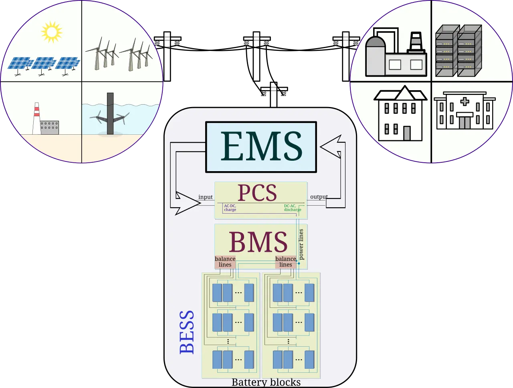

전력망 배터리는 재생에너지 확대와 AI 데이터센터 증가 사이에서 점점 더 중요한 설비가 되고 있습니다. 낮에 남는 전기를 저장해 저녁 피크에 내보내고, 전력망의 주파수와 혼잡을 조절하는 역할을 맡을 수 있습니다. 그러나 배터리를 설치했다고 바로 돈이 되는 것은 아닙니다.
실제 사업성은 계통 접속 대기열에서 시작됩니다. 발전소와 배터리가 전력망에 연결되려면 송전망 여유, 변전소 용량, 접속 심사, 계통 보강 비용을 통과해야 합니다. 배터리 가격이 내려가도 전력망에 연결되지 못하면 수익은 종이에만 남습니다.
2026년 산업 현장에서 중요한 질문은 “배터리가 얼마나 싸졌나”보다 “어디에 연결되고 어떤 정산을 받나”입니다. 같은 배터리라도 혼잡 지역에 있느냐, 재생에너지와 함께 묶이느냐, 보조서비스 시장에 참여할 수 있느냐에 따라 가치가 완전히 달라집니다.
대기열은 숨은 병목입니다

전력망 접속 대기열은 사업자가 가장 먼저 부딪히는 현실입니다. 발전소와 배터리 프로젝트가 한꺼번에 몰리면 계통 운영자는 실제로 지을 가능성이 높은 프로젝트를 가려야 합니다. 서류상으로는 수백 기가와트가 대기 중이어도, 모두가 같은 속도로 연결되는 것은 아닙니다.
대기열이 길어지면 금융 비용도 늘어납니다. 토지와 인허가를 확보했더라도 연결 시점이 늦어지면 장비 발주와 수익 개시가 밀립니다. 투자자는 배터리 셀 가격보다 접속 가능 시점과 계통 보강 부담을 더 꼼꼼히 봐야 합니다. 전력망 사업은 전기 장비 사업이면서 동시에 시간과 허가의 사업입니다.
저장은 위치가 수익을 정합니다
배터리의 가치는 위치에 따라 크게 달라집니다. 전기가 남는 지역에서는 저장이 필요하지만, 전기가 필요한 지역까지 보낼 송전망이 부족하면 가격 차이가 커집니다. 배터리는 이 가격 차이를 줄이면서 수익을 얻을 수 있습니다. 반대로 혼잡이 적은 곳에 설치된 배터리는 기대만큼 돈을 벌기 어렵습니다.
재생에너지 발전소와 함께 붙는 배터리도 따로 봐야 합니다. 태양광 옆 배터리는 출력 변동을 줄이고 저녁 시간에 전기를 팔 수 있지만, 정산 규칙이 불리하면 수익이 제한됩니다. 전력망 배터리는 기술 성능표보다 시장 규칙과 지역 가격을 더 많이 탑니다.
안전과 열 관리가 비용을 만듭니다
대형 배터리는 안전 설계가 사업성의 일부입니다. 화재 감지, 열 폭주 차단, 소방 접근성, 냉각, 셀 간 간격, 운영 데이터 감시가 모두 필요합니다. 안전 비용을 줄이면 초기 투자비는 낮아 보이지만, 사고가 나면 보험료와 주민 수용성이 크게 흔들립니다.
전력망 가까운 곳에 세워지는 설비일수록 지역 사회의 신뢰도 중요합니다. 주민은 배터리가 어떤 위험을 갖는지, 사고 때 누가 책임지는지, 주변 전력요금과 환경에 어떤 영향이 있는지 묻습니다. 좋은 프로젝트는 배터리 용량만이 아니라 안전 계획과 설명 능력에서 경쟁력을 얻습니다.
정산 규칙이 산업을 키웁니다
배터리는 전기를 사고파는 것 외에도 주파수 조정, 예비력, 피크 저감, 혼잡 완화 같은 서비스를 제공할 수 있습니다. 문제는 각 서비스가 시장에서 제대로 보상되는지입니다. 정산 규칙이 모호하면 사업자는 보수적으로 움직이고, 필요한 지역에 배터리가 충분히 들어가지 않습니다.
앞으로 확인할 지점은 접속 심사 속도, 계통 보강 비용 배분, 보조서비스 시장 개방, 장기 계약 구조입니다. 배터리 산업은 셀 가격 하락만으로 커지지 않습니다. 전력망이 배터리의 역할을 가격으로 인정할 때, 저장 설비는 비용이 아니라 인프라 자산으로 자리 잡습니다.
배터리 사업은 전력 가격의 하루 곡선을 읽는 일과도 연결됩니다. 낮에는 태양광이 많아 가격이 낮아지고, 저녁에는 수요가 몰리며 가격이 올라갈 수 있습니다. 배터리는 이 차이를 활용하지만, 지역별 가격 제도가 없으면 가치가 제대로 드러나지 않을 수 있습니다.
데이터센터 수요도 새로운 변수입니다. AI 서버는 안정적인 전력을 많이 필요로 하고, 갑작스러운 전력 변동을 싫어합니다. 배터리는 데이터센터 주변에서 피크를 낮추거나 비상 전원을 보조할 수 있지만, 이 역할이 전력시장 규칙에서 어떻게 보상되는지가 중요합니다.
배터리 수명은 수익 계산의 기본입니다. 하루에 몇 번 충방전하는지, 어느 깊이까지 쓰는지, 온도를 어떻게 관리하는지에 따라 성능 저하 속도가 달라집니다. 단기 수익을 높이려고 과하게 운전하면 장기 수명과 보증 비용이 나빠질 수 있습니다.
정책 담당자는 대기열을 줄이기 위해 허수 프로젝트를 걸러내야 합니다. 접속권만 확보하고 실제 투자를 미루는 사업자가 많으면 필요한 프로젝트가 뒤로 밀립니다. 보증금, 일정 검증, 계통 보강 비용 분담 같은 장치가 제대로 작동해야 배터리 산업도 건강하게 커집니다.
계통 운영자 입장에서도 배터리는 양면성을 가집니다. 잘 배치된 배터리는 피크를 낮추고 재생에너지 변동을 흡수하지만, 잘못 설계된 배터리는 특정 시간대에 오히려 혼잡을 키울 수 있습니다. 모든 배터리가 전력망에 도움이 되는 것이 아니라, 운영 신호에 맞춰 충전과 방전을 조절할 수 있어야 도움이 됩니다.
금융기관은 배터리 프로젝트의 수익 예측을 더 보수적으로 보려 합니다. 전력 가격 차이, 보조서비스 가격, 수명 저하, 보험료, 접속 지연이 모두 변동하기 때문입니다. 안정적인 장기 계약이 있으면 자금 조달이 쉬워지고, 시장 가격만 믿는 프로젝트는 금리가 높아질 수 있습니다. 산업의 성숙은 금융 조건에서도 드러납니다.
지역 전력요금과 주민 수용성도 사업성을 바꿉니다. 배터리가 지역 전력망 안정에 도움을 주더라도 주민이 위험만 느낀다면 인허가는 늦어질 수 있습니다. 사업자는 설비 규모, 화재 대응, 소음, 경관, 지역 편익을 구체적으로 설명해야 합니다. 에너지 인프라는 기술적으로 옳다는 이유만으로 지역의 동의를 자동으로 얻지 못합니다.
전력망 배터리는 설비가 눈에 잘 띄지 않아도 지역 산업의 전기 품질을 좌우할 수 있습니다. 공장과 데이터센터가 원하는 것은 싼 전기만이 아니라 끊기지 않는 전기입니다.
관련 영상
ESS 시스템 구성 완벽 해부! 차세대 ESS 기술 변화의 핵심은?
전력망 배터리는 에너지 전환의 멋진 그림보다 훨씬 현실적인 사업입니다. 어디에 연결되는지, 얼마나 기다리는지, 어떤 서비스를 팔 수 있는지가 수익을 정합니다. 배터리를 많이 설치하는 시대가 아니라, 전력망이 실제로 필요로 하는 곳에 정확히 연결하는 시대가 오고 있습니다.